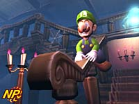
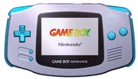
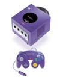
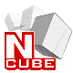
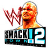
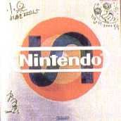
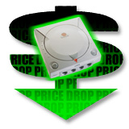
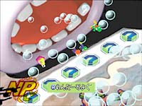

Las patentes de software sólo benefician a las grandes empresas. |
 |
|
|
|
Nintendo 64 Game Boy N. GAMECUBE Game Boy Advance |
|
|
|
Playstation Playstation 2 |
|
|
| Dreamcast |
|
Juegos de Moda |
|
Pokém. Snap(N64) RE Code Vero. (DC) S.Smash Bros (N64) Power Stone 2 (DC) Zelda:M.'s M. (N64) Phantasy S.O. (DC) F. Fantasy IX (PS) Sonic Adv. 2 (DC) Pokémon St. (N64) |
|
Otras Secciones |
|
Colaboraciones Actualizaciones Ant. Noticias Ant. Encuestas Ant. |
|
E-Mail
|
| Noticias Anteriores | |
Es una imágen de como sería Zelda en GAMECUBE. En la presentación se mostró esto: Apreta aquí Los juegos de GAMECUBE. (26/8/00)  En el Space World se mostró un video de demostración de lo que podía hacer GAMECUBE. Se vió a Luigi en un castillo, a Link de Zelda luchando espada contra espada con uno que se parece a Ganondorf (quien sabe...), a unos robots (Metroid esta previsto para GC, por cierto) y paisajes futuristas, a un montón de Pokémon con Meowth en medio y finalmente a decenas de Mario pululando por un mundo redondo con Nintendo Game Cube escrito en medio y como fondo las letras Super Mario 128. Genial presentación, que además poseo los screenshots y los pondré de inmediato. F-Zero en GBA. (26/8/00) Es oficial, el clásico F-Zero de SNES, o el F-Zero X de N64, tendrá su versión para GBA, sin duda un acierto por parte de Nintendo. Hay una imágen que prox. tambien la pondré. Game Boy Advance da la cara. (25/8/00)  GBA esta presentando un montón de novedades en el Space World y por fin, despues de una larga espera, se ha descubierto junto a su hermana mayor GAMECUBE con un aspecto de lo más espectacular. Nintendo GAMECUBE al descubierto. (25/8/00)  Todo oficial, el Space World esta desbordado de noticias de todo tipo sobre N64, GBC, GBA y sobre todo: de GAMECUBE, la nueva consola de Nintendo conocida como Dolphin. Así es, se sabe casi todo y pronto lo publicaré todo. Sólo decir que los discos que llevará serán tan pequeños que podrás llevarlos en el bolsillo (8 cm), unos minidiscs de 1,5 GB de capacidad. Podeis verla en la foto y aprentando aquí la vereis en grande. Conexiones de GAMECUBE y GBA. (25/8/00) Es oficial la total compatibilidad entre GAMECUBE y GBA, estas 2 consolas esconden proyectos en los cuales se podría traspasar información entre una consola y la otra, como podeis ver en esta foto. Tambien esta confirmada la posibilidad de GBA de jugar en modo multijugador ¡¡con 4 jugadores!! ¡40 títulos anunciados para GBA!. (25/8/00) 40 títulos estan ya previstos para GBA. Supongo que no todos saldrán a la vez que la consola, pero con 40 títulos previstos antes de salir al mercado...vamos, que va por buen camino (cuando ponga la lista ya avisaré). Forma del cartucho de GBA. (25/8/00)  Será igual de ancho que el cartucho de Game Boy Color, sólo que más
corto. Realmente un mérito por parte de Nintendo, pues tiene la capacidad de uno de N64 y el
tamaño de uno de GBC. Tecnología.
Será igual de ancho que el cartucho de Game Boy Color, sólo que más
corto. Realmente un mérito por parte de Nintendo, pues tiene la capacidad de uno de N64 y el
tamaño de uno de GBC. Tecnología.Capacidad del cartucho de GBA. (25/8/00) Finalmente, ya confirmado, el cartucho de GBA tendrá una capacidad de 512Mbits, el doble de lo que se esperaba. A decir verdad, ¡tendrá la misma capacidad que el de N64!. 512Mbits, o 64 Megas, que es lo que ocupa por ejemplo el Resident Evil 2 de N64, el único de N64 que aprovecha al máximo el espacio del cartucho. El módem de Dolphin. (23/8/00) Oficialmente confirmado por "los grandes" de Nintendo en el Space World, la "dolphin" tendrá un módem de tecnología V.90 56K dial-up. Y algunos direis: ¿Y que es esto?. Pues se puede decir, aunque los 56k ya estan del todo establecidos, que es de lo más potente que puedes encontrar en cuanto a módems. ¿El nombre definitivo de Dolphin?. (23/8/00)  Según ign, el nombre definitivo de Dolphin no será Star Cube. El nombre final de la próxima consola de Nintendo es Nintendo Game Cube, que luego podria acortarse en Nintendo Cube o N-Cube, incluso lo escriben de esta forma: Nintendo³. Hay mucha expectativa en saber el nombre definitivo. Cuando acabe el Space World se dará a conocer, porque la verdad yo ya no sé cual creerme. Unos datos de GBA. (23/8/00) Aparte de que será compatible con todos los juegos de GB y GBC, la GBA tendrá unos cartuchos con capacidad de hasta 256Mbits de memoria. No esta mal, ¿no?. WWF Smackdown 2 para PS. (22/8/00)  Se confirma la segunda parte de este genial juego de lucha libre norteamericana que tanto agrada al público en general. Se llamará WWF Smackdown 2: Know your role, su destino es Playstation y ya hay algunas capturas de cómo será el juego. No se sabe aún la fecha de salida en España Dolphin...digo... ¿Star Cube?. (21/8/00)  Como ya dije el 23 de Julio, el proyecto Dolphin se llamará finalmente Star Cube. Así lo confirman muchas publicaciones y ya lo hizo la propia Nintendo Suecia, además de que Star Cube fué hace poco registrado como marca por la propia Nintendo y saliera en una revista japonesa este anuncio (foto) con la "S". Así que no hay dudas, y la confirmación oficial: Space World del 23 al 25 de Agosto. Pokémon Stadium Oro y Plata en N64. (21/8/00) Sale en Japón en Diciembre de este año, pero ellos estan muy avanzados... Podremos ver un trailer de este juego (como los japoneses) en la tercera pelicula de Pokémon, que llegará calculo muy entrados en el 2001. Una de fechas en N64. (21/8/00) Turok 3 saldrá a finales de Septiembre. A mediados del mismo mes sale Pokémon Snap. El 16 de octubre sale el Poémon Oro y Plata en América. En diciembre (por ahora) saldrá Pokémon Puzzle league. ISS 2000 posiblemente en octubre. Mario Tennis 64 a finales de octubre. Y por último 2 de los más esperados: Zelda: Majora's Mask a finales de noviembre y Mario Party 2 a mediados de octubre. Nintendo habla español. (21/8/00) Despues de las criticas que sufrió por la no traducción del Zelda, Nintendo ha tomado nota y lo esta haciendo de maravilla. Practicamente TODOS sus títulos estarán como mínimo traducidos al español: Zelda: Majora's Mask, Mario Party 2, Pokémon Snap, los Pokémon de GB... o los ya Pokémon Stadium, F-1 WGP 2...al igual que las otras compañias, como RARE con Perfect Dark, DK64, JFG... Vaya con los nombrecitos... (21/8/00) Es sólo un rumor y una lógica por parte de los desorrallores profesionales, pero se dice que Game Boy Advance quizá también cambie su nombre, ¿Como se llamará entonces? Dreamcast baja su precio. (19/8/00)  Según ign, Dreamcast bajará su precio a principios de septiembre en el mercado americano. Dreamcast, que allí tiene un precio de 199.99$ (dólares), bajará su precio a 149.99$, que en ptas. significaría bajar el precio de unas 36.000 que vale ahora hasta unas 27.000 ptas. Como veis, sería una bajada muy grande. Las razones parecen ser o la malas ventas obtenidas últimamente o una prevención respecto a la próxima salida de la PS 2, la Dolphin y la lejana X-box. Lo que aún no se sabe es si esta bajada se aplicará tambien en España y Europa en general. Grandia en GBA. (19/8/00) Grandia, previsto anteriormente para GBC será finalmente llevado a Game Boy Advance. Es un RPG de gran colorido y argumento atractivo con estética graciosa: personajes "redondos" de corte clásico. PSone ya tiene fecha y precio. (16/8/00) Almenos en el mercado americano, PSone se sabe saldrá entre el 15 y el 20 de Septiembre y su precio final será de unas 20.000 ptas. Se presentó Mario Party 3. (15/8/00)  Gracias al esperadísimo Space World 2000, feria de videojuegos, Nintendo desvela multitud de proyectos. Entre sus juegos anunciados me ha llamado la atención Mario Party 3, que podeis ver una foto. Tambien se presentaron otros de los que hablaré pronto como el Sin and Punishment: Successor of the Earth (prometedor juego) y el nuevo Zelda de GB. Fotos de los primeros juegos de GBA. (13/8/00) Y los precios de Nintendo. (13/8/00) Tambien se han dado ha conocer los posibles precios de las nuevas consolas de Nintendo. La Dolphin valdrá unas 35.000 ptas, gran precio de salida incluso más barato que el de la DC (39.900 ptas) y la Game Boy Advance unas 18.000 ptas. Estos son precios aproximados. Fecha y precio final de Playstation 2. (13/8/00) Finalmente, ya confirmado oficialmente por Sony España, Playstation 2 saldrá finalmente en España el dia 24 de Noviembre y su precio final será de 74.900 ptas. No sé vosotros pero yo creo que se han pasado tres calles, despues de las geniales ventas de Playstation podrían haberse estirado un poco y poner un precio más al alcance de la mayoría de usuarios. Shenmue 2 ya es realidad. (13/8/00) No ha salido aún en España el primero y ya tiene fecha de salida Shenmue: Chapter Two en Japón en Marzo del 2001. Lo que son las cosas... Fecha Dino Crisis 2. (13/8/00) Dino Crisis 2, el survival horror de PS con dinosaurios saldá en Japón el dia 13 de septiembre. Rumores Resident Evil. (9/8/00) Ultimamente se estan difundiendo rumores sobre las posibles nuevas entregas de Resident Evil para las diferentes consolas. El más sorprendente es el de la posible nueva entrega de Resident para Dreamcast. Se llamará X project y contará con ¿6 GD's!. El otro es el posible Resident Evil IV para la PS2. Tambien se dice que el Resident Evil Zero para la N64 a lo mejor sale para Dolphin finalmente. Ya sabeis, sólo rumores... Bombazo Pokémon!!. (7/8/00) Gran noticia para los fans de Pokémon, pues Nintendo lanzará en Diciembre Pokémon Stadium Oro y Plata para N64. El juego incluirá los 251 Pokémon y será totalmente compatible con los de GB: Pokémon Rojo, Azul, Amarillo, Verde, Oro y Plata. Primer bombazo para Game Boy Advance. (7/8/00) Se ha confirmado la aparición para GBA de una versión de Mario Kart, que sumada al seguro nuevo Mario, se auguran unos titulos geniales para esta portátil con futuro de oro. Se retrasa Playstation 2. (7/8/00) Finalmente su fecha de salida se verá retrasada en Europa. En principio se dijo el 26 de octubre, pero finalmente a quedado relegada al 17 de noviembre y con pocas unidades, pues se dice que Sony pondrá a la venta unas 200.000 (se me antojas pocas...). Dolphin se destapa. (7/8/00) Nintendo presentará la Dolphin en la feria de Japón Space World, pero desgraciadamente no habrá ninguna versión jugable. De la que si habran será de los nuevos juegos de GB, N64 y Game Boy Advance. Últimas fechas de los "Cracks" de Nintendo. (1/8/00) Estas fechas son de USA, lo que significa que a Europa llegaran más o menos a la misma fecha o poco despues. Como siempre, vaya. Mario Tennis - 28 de Agosto Pokemon Puzzle League - 25 de Septiembre The Legend of Zelda: Majora's Mask - 26 de Octubre Hey You, Pikachu! - 6 de Noviembre Consola N64 Pikachu - 6 de Noviembre Mickey's Speedway USA - 13 de Noviembre Banjo-Tooie - 20 de Noviembre Paper Mario - 26 de Diciembre Conker's Bad Fur Day - 22 de Enero del 2001 |
{kind=link}
come.to/videojuegos
videojuegos.come.to